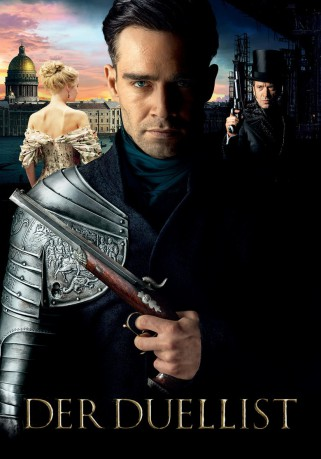
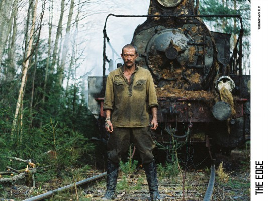

#7618 Der Duellist
Alternativ: The Duelist (Englischer Titel)
 
 IMDB-Wertung: 6.4 / 10
IMDB-Wertung: 6.4 / 10  Metascore: 0
Metascore: 0 
Russland im 19. Jahrhundert: Der ehemaliger Offizier Yakovlev lässt sein Exil hinter sich und kehrt nach St. Petersburg zurück. Als Berufsduellist verdient er seinen Unterhalt damit, für furchtsame oder schwache Männer gegen Bezahlung deren Duelle auszutragen, was im russischen Ehrenkodex erlaubt ist. Doch der erfolgreiche Schütze trägt ein dunkles Geheimnis mit sich: Einst beschuldigte ihn Graf Beklemishev eines Verbrechens, das er nicht beging, und verbannte ihn aus der Stadt. Zurück auf heimischem Boden verliebt sich Yakovlev in die Fürstin Martha, stellt jedoch bald mit Schrecken fest, dass sie ausgerechnet dem gewissenlosen Beklemishev zur Frau versprochen ist. Nun muss er seine Identität enthüllen, um seine Liebe zu retten und Rache an seinem Erzfeind zu nehmen.
Jahr: 2016
Dauer: 109 Minuten
FSK:
Land: Russland Studio: Koch MediaTonspuren:
Untertitel: Deutsch,
Auflösung: 1080p (1920x800) Größe: 10444 MB
Genre: Action, Thriller, Drama
Regisseur: Aleksey Mizgirev
Drehbuch: Columbia Pictures
Soundtrack:
Darsteller:
- Pyotr Fyodorov als Yakovlev
-  Vladimir Mashkov als Graf Beklemishev
 Yuri Kolokolnikov als Basargin
Yuri Kolokolnikov als Basargin- Franziska Petri als Aleksandra Iosifovna
- Aleksandr Yatsenko als Yakovlev mladshiy
 Martin Wuttke als Nemetskiy baron
Martin Wuttke als Nemetskiy baron- Yuriy Kuznetsov als Sluga
 Sergey Garmash als Odnorukiy dvoryanin
Sergey Garmash als Odnorukiy dvoryanin- Yuliya Khlynina als Marfa Tuchkova
- Aleksandr Mizev als Ofitser-tyuremshchik
- Sergey Nevidimov als Soldat
- Vladimir Panichev als Dvoryanin
- Vadim Pavlenko als Mordvinov
- Aleksandra Serebryakova als Dvoryanka
- Pavel Tabakov als Knyaz Tuchkov
- Artyom Vasilev als Ofitser
- Pyotr Chubko als Sluga duelyanta
- Pierre Bourel als Knyaz Rayn
- Nikolay Butenin als Beglyy kartorzhnik
Datei: X:\2016(A-F)\Duellist, Der (2016, FSK, 1920x800).mkv seit 29.11.2017
Festplatte: HD 2016(A-Z)
 Es gibt insgesamt 147 Filme in der Gruppe '2016(A-F)'
Es gibt insgesamt 147 Filme in der Gruppe '2016(A-F)'